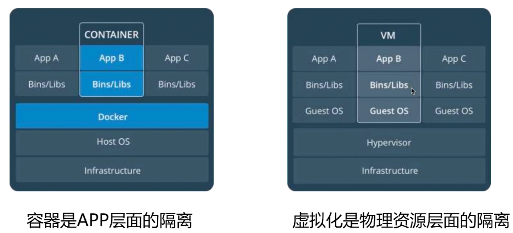

容器技术和Docker简介
传统项目部署
- 部署非常慢
- 成本高
- 资源浪费
- 难于迁移和扩展
- 可能会被限定硬件厂商
虚拟化技术的优点
- 资源池 - 一个物理机的资源被分配到不同的虚拟机里
- 易扩展 - 直接增加物理机或者虚拟机即可
易上云 - AWS, GCP, 阿里云等
但是虚拟化具有一定的局限性: 虚拟机是一个完整的操作系统, 需要分配资源, 当虚拟机数量增多时, 操作系统本身消耗的资源势必增多
使用容器解决了什么问题呢?
- 解决了开发和运维的矛盾
- 在开发和运维之间搭建桥梁, 帮助实现 DevOps
容器的定义:
- 对软件和其依赖的标准化打包
- 应用之间的相互隔离
- 共享同一个 OS Kernel
- 可以运行在很多主流 OS 上
容器和虚拟机的区别

Docker Machine: 自动在虚拟机上安装 Docker 环境的工具
Docker环境准备
- docker安装：略（参考官网）
docker machine
简介
Docker Machine 是一种可以让您在虚拟主机上安装 Docker 的工具，并可以使用 docker-machine 命令来管理主机。
Docker Machine 也可以集中管理所有的 docker 主机，比如快速的给 100 台服务器安装上 docker